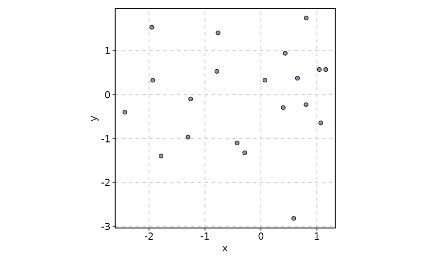
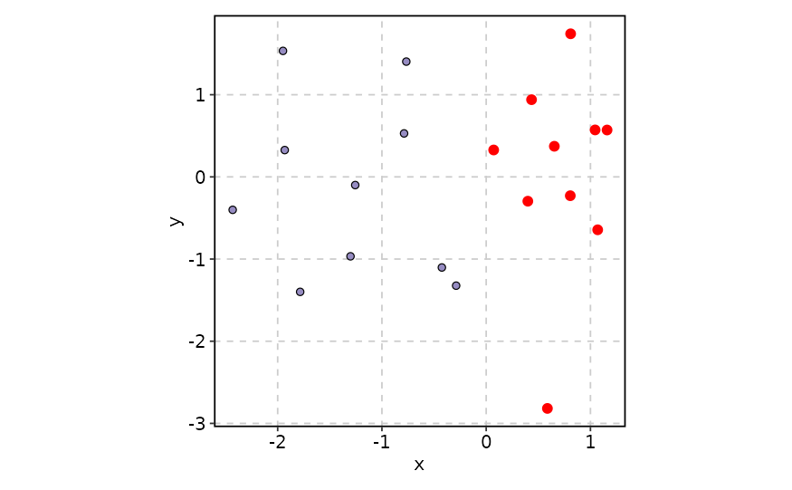
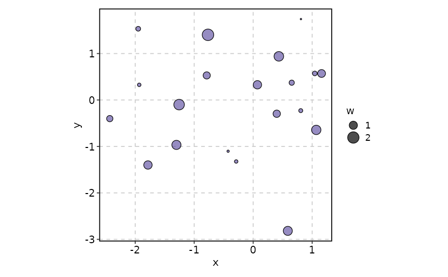
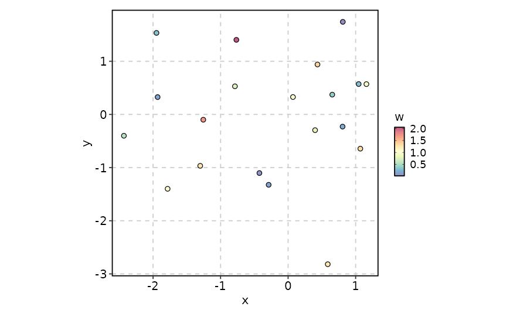
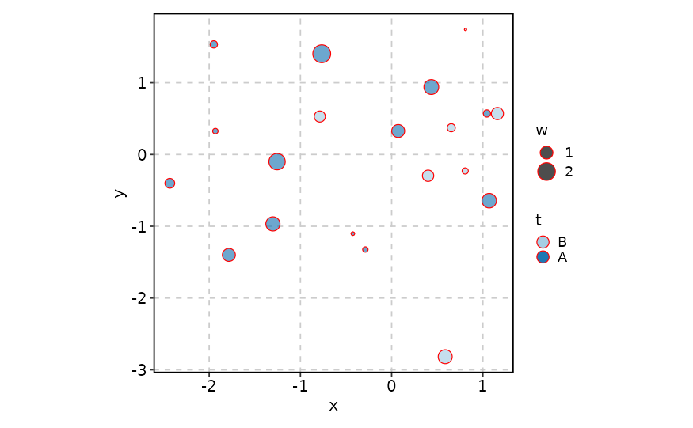
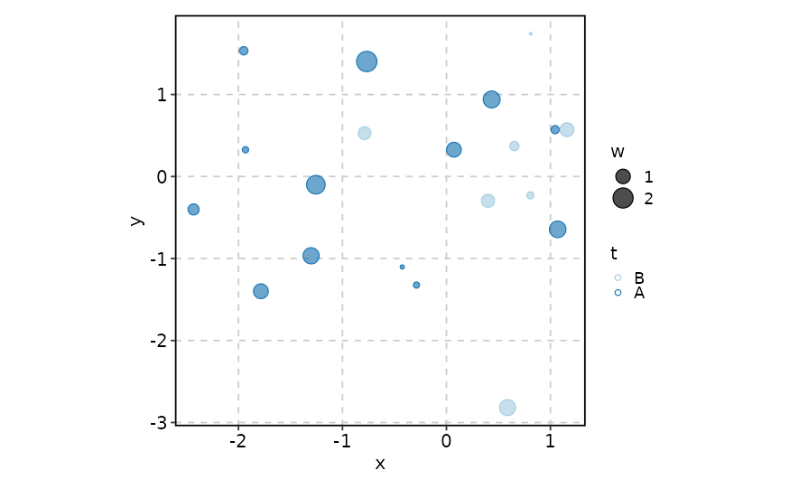
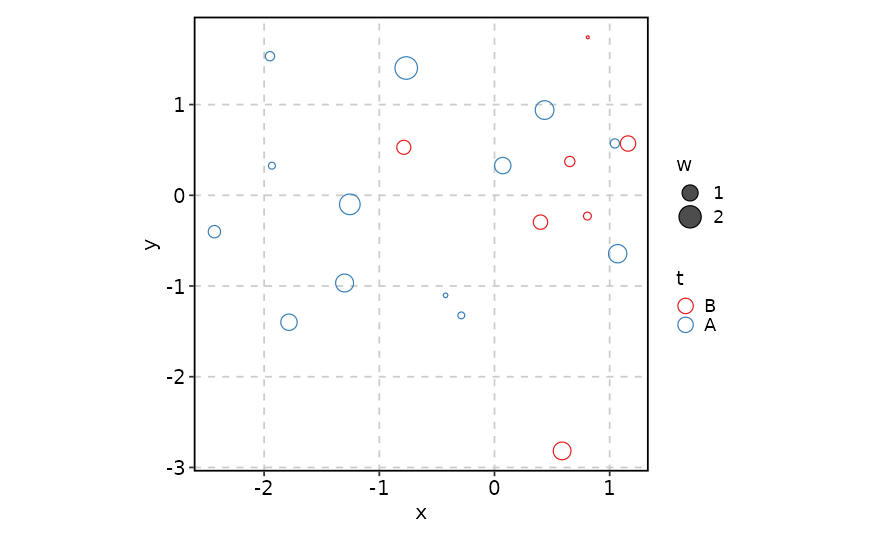
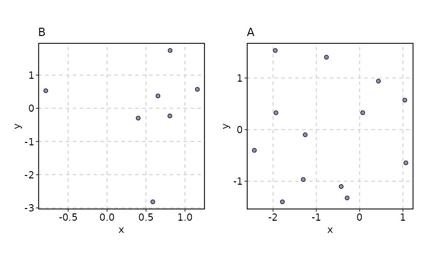

Scatter Plot
Usage
ScatterPlot(
data,
x,
y,
size_by = 2,
size_name = NULL,
color_by = NULL,
color_name = NULL,
color_reverse = FALSE,
split_by = NULL,
split_by_sep = "_",
shape = 21,
alpha = ifelse(shape %in% 21:25, 0.65, 1),
border_color = "black",
highlight = NULL,
highlight_shape = 16,
highlight_size = 3,
highlight_color = "red",
highlight_alpha = 1,
theme = "theme_this",
theme_args = list(),
palette = ifelse(!is.null(color_by) && !is.numeric(data[[color_by]]), "Paired",
"Spectral"),
palcolor = NULL,
facet_by = NULL,
facet_scales = "fixed",
facet_ncol = NULL,
facet_nrow = NULL,
facet_byrow = TRUE,
aspect.ratio = 1,
legend.position = "right",
legend.direction = "vertical",
title = NULL,
subtitle = NULL,
xlab = NULL,
ylab = NULL,
combine = TRUE,
nrow = NULL,
ncol = NULL,
byrow = TRUE,
seed = 8525,
axes = NULL,
axis_titles = axes,
guides = NULL,
design = NULL,
...
)Arguments
- data
A data frame.
- x
A character string specifying the column name of the data frame to plot for the x-axis.
- y
A character string specifying the column name of the data frame to plot for the y-axis.
- size_by
Which column to use as the size of the dots. It must be a numeric column. Or it can be a numeric value to specify the size of the dots.
- size_name
A character vector specifying the name for the size legend.
- color_by
Which column to use as the color of the dots. It could be a numeric column or a factor/character column. For shapes 21-25, the color is applied to the fill color.
- color_name
A character vector specifying the name for the color legend.
- color_reverse
A logical value indicating whether to reverse the color direction. Default is FALSE.
- split_by
The column(s) to split data by and plot separately.
- split_by_sep
The separator for multiple split_by columns. See
split_by- shape
A numeric value specifying the shape of the points. Default is 21.
- alpha
A numeric value specifying the transparency of the plot.
- border_color
A character vector specifying the color for the border of the points. Or TRUE to use the fill color as the border color.
- highlight
A vector of indexes or rownames to select the points to highlight. It could also be an expression (in string) to filter the data.
- highlight_shape
A numeric value specifying the shape of the highlighted points. Default is 16.
- highlight_size
A numeric value specifying the size of the highlighted points. Default is 3.
- highlight_color
A character vector specifying the color of the highlighted points. Default is "red".
- highlight_alpha
A numeric value specifying the transparency of the highlighted points. Default is 1.
- theme
A character string or a theme class (i.e. ggplot2::theme_classic) specifying the theme to use. Default is "theme_this".
- theme_args
A list of arguments to pass to the theme function.
- palette
A character string specifying the palette to use. A named list or vector can be used to specify the palettes for different
split_byvalues.- palcolor
A character string specifying the color to use in the palette. A named list can be used to specify the colors for different
split_byvalues. If some values are missing, the values from the palette will be used (palcolor will be NULL for those values).- facet_by
A character string specifying the column name of the data frame to facet the plot. Otherwise, the data will be split by
split_byand generate multiple plots and combine them into one usingpatchwork::wrap_plots- facet_scales
Whether to scale the axes of facets. Default is "fixed" Other options are "free", "free_x", "free_y". See
ggplot2::facet_wrap- facet_ncol
A numeric value specifying the number of columns in the facet. When facet_by is a single column and facet_wrap is used.
- facet_nrow
A numeric value specifying the number of rows in the facet. When facet_by is a single column and facet_wrap is used.
- facet_byrow
A logical value indicating whether to fill the plots by row. Default is TRUE.
- aspect.ratio
A numeric value specifying the aspect ratio of the plot.
- legend.position
A character string specifying the position of the legend. if
waiver(), for single groups, the legend will be "none", otherwise "right".- legend.direction
A character string specifying the direction of the legend.
- title
A character string specifying the title of the plot. A function can be used to generate the title based on the default title. This is useful when split_by is used and the title needs to be dynamic.
- subtitle
A character string specifying the subtitle of the plot.
- xlab
A character string specifying the x-axis label.
- ylab
A character string specifying the y-axis label.
- combine
Whether to combine the plots into one when facet is FALSE. Default is TRUE.
- nrow
A numeric value specifying the number of rows in the facet.
- ncol
A numeric value specifying the number of columns in the facet.
- byrow
A logical value indicating whether to fill the plots by row.
- seed
The random seed to use. Default is 8525.
- axes
A string specifying how axes should be treated. Passed to
patchwork::wrap_plots(). Only relevant whensplit_byis used andcombineis TRUE. Options are:'keep' will retain all axes in individual plots.
'collect' will remove duplicated axes when placed in the same run of rows or columns of the layout.
'collect_x' and 'collect_y' will remove duplicated x-axes in the columns or duplicated y-axes in the rows respectively.
- axis_titles
A string specifying how axis titltes should be treated. Passed to
patchwork::wrap_plots(). Only relevant whensplit_byis used andcombineis TRUE. Options are:'keep' will retain all axis titles in individual plots.
'collect' will remove duplicated titles in one direction and merge titles in the opposite direction.
'collect_x' and 'collect_y' control this for x-axis titles and y-axis titles respectively.
- guides
A string specifying how guides should be treated in the layout. Passed to
patchwork::wrap_plots(). Only relevant whensplit_byis used andcombineis TRUE. Options are:'collect' will collect guides below to the given nesting level, removing duplicates.
'keep' will stop collection at this level and let guides be placed alongside their plot.
'auto' will allow guides to be collected if a upper level tries, but place them alongside the plot if not.
- design
Specification of the location of areas in the layout, passed to
patchwork::wrap_plots(). Only relevant whensplit_byis used andcombineis TRUE. When specified,nrow,ncol, andbyroware ignored. Seepatchwork::wrap_plots()for more details.- ...
Additional arguments.
Examples
set.seed(8525)
data <- data.frame(
x = rnorm(20),
y = rnorm(20),
w = abs(rnorm(20)),
t = sample(c("A", "B"), 20, replace = TRUE)
)
ScatterPlot(data, x = "x", y = "y")

# highlight points
ScatterPlot(data, x = "x", y = "y", highlight = 'x > 0')

# size_by is a numeric column
ScatterPlot(data, x = "x", y = "y", size_by = "w")

# color_by is a numeric column
ScatterPlot(data, x = "x", y = "y", color_by = "w")

# color_by is a factor/character column and set a border_color
ScatterPlot(data, x = "x", y = "y", size_by = "w", color_by = "t",
border_color = "red")

# Same border_color as the fill color
ScatterPlot(data, x = "x", y = "y", size_by = "w", color_by = "t",
border_color = TRUE)

# Shape doesn't have fill color
ScatterPlot(data, x = "x", y = "y", size_by = "w", color_by = "t",
shape = 1, palette = "Set1")

# Change color per plot
ScatterPlot(data, x = "x", y = "y", split_by = "t",
palcolor = list(A = "blue", B = "red"))
